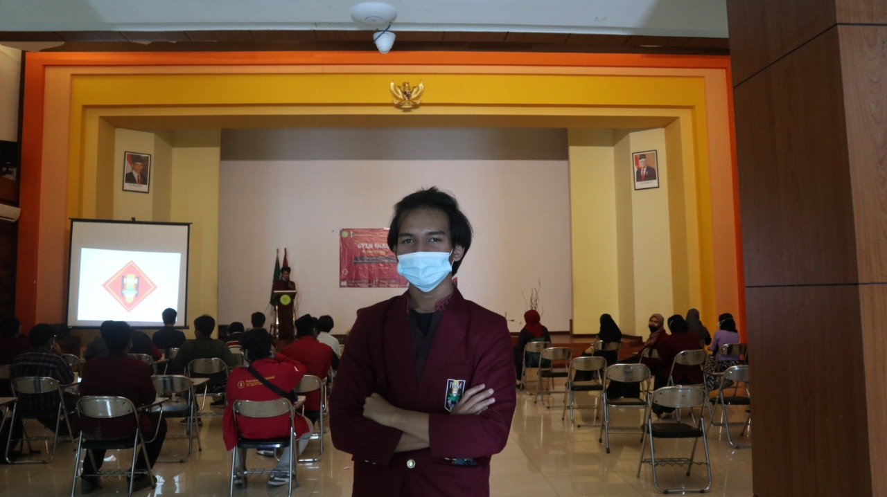
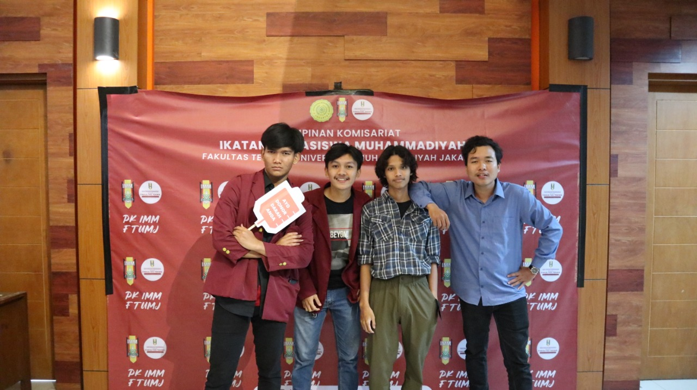
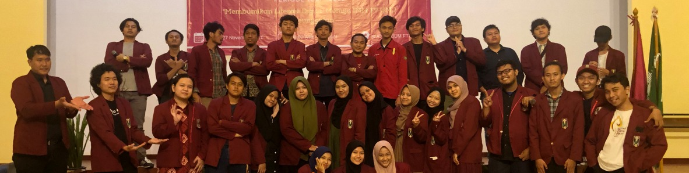
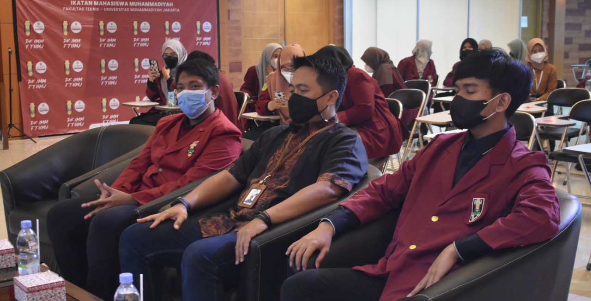
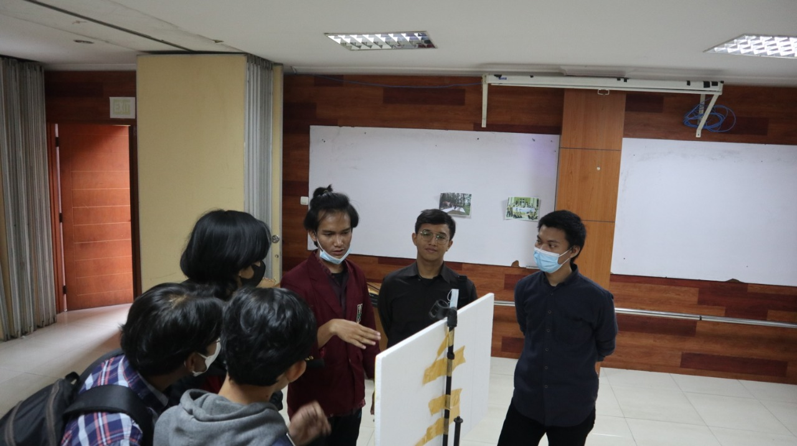
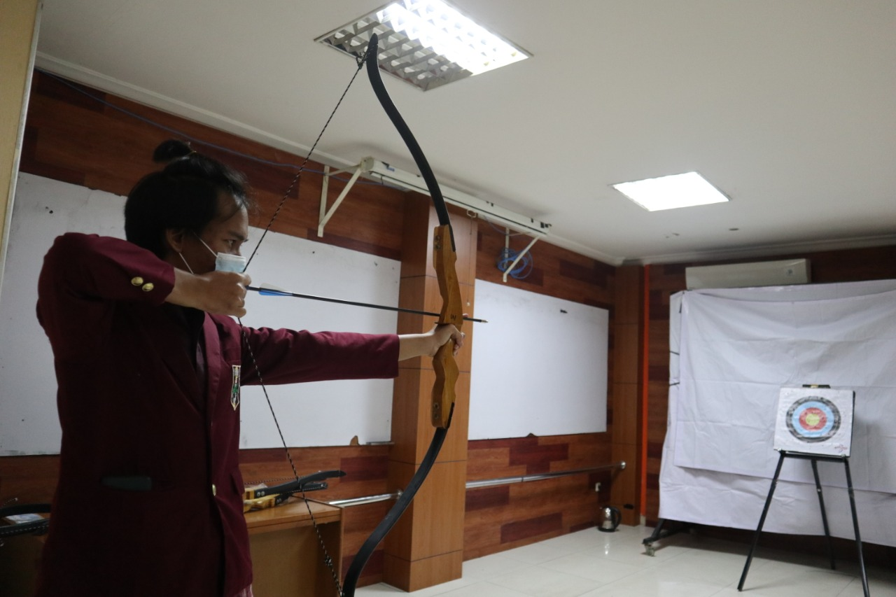

Pengertian

Ikatan Mahasiswa Muhammadiyah (IMM) adalah sebuah Organisasi Gerakan Mahasiswa Islam, sekaligus Organisasi Otonom
Muhammadiyah yang bergerak di bidang Keagamaan, Kemahasiswaan, dan Kemasyarakatan. IMM berdiri secara lokal di
Yogyakarta, tanggal 14 Maret 1964 M / 29 Syawal 1384 H dan Menasional Tahun 1965. Tujuan IMM adalah "mengusahakan
terbentuknya Akademisi Islam yang Berakhlak Mulia dalam rangka mencapai Tujuan Muhammadiyah".
Sejarah Perkembangan

- Yogyakarta (1964): tempat berdirinya IMM.
- Surakarta (1965): tempat Muktamar (Munas) I IMM dan diputuskannya Deklarasi Kottabarat Enam Penegasan IMM, Lambang IMM,
Bendera IMM, Mukaddimah AD/ART IMM, AD/ART IMM, Pakaian IMMawati (baju kerudung dengan warna kuning gading).
- Surakarta (1966): tempat Tanwir (Konpernas) I IMM dan diputuskannya 15 Pernyataan IMM.
- Garut (1967): tempat Tanwir (Konpernas) II IMM dan diputuskannya Deklarasi Garut.
- Yogyakarta (1969): tempat Tanwir (Konpernas) III IMM dan diputuskannya sistemisasi serta pembakuan Sistem Perkaderan
Ikatan (SPI).
- Magelang (1970) tempat Tanwir (Konpernas) IV IMM dan diputuskannya Mars IMM, Hymne IMM, dan Identitas IMM.
- Semarang (1975): tempat Muktamar IV IMM dan diputuskannya Deklarasi Baiturrahman.
- Padang (1986): tempat Muktamar V IMM dan diputuskannya Pokok-pokok Pikiran IMM.
- Surakarta (1986): tempat Seminar dan Lokakarya Nasional (Semiloknas) dan diputuskannya Profil Kader .
- Purwokerto (1992): tempat Muktamar VII IMM dan diputuskannya Nilai Dasar Ikatan.
- Malang (2002): tempat Seminar dan Lokakarya Nasional (Semiloknas) dan diputuskannya Deklarasi Kota Malang: Manifesto
Kader Progresif.
- Jakarta (2004): diputuskannya Manifesto Politik 40 Tahun IMM.
- Bandar Lampung (2008): tempat Muktamar XIII IMM dan diputuskannya Pokok-pokok Pemikiran IMM: Jelang Setengah Abad
Memasuki Era Globalisasi.
- Medan (2012): tempat Muktamar XV IMM dan diputuskannya Deklarasi Kota Medan.
- Surakarta (2014): tempat Muktamar XVI IMM dan diputuskannya Deklarasi Setengah Abad IMM dan Penegasan Kembali Lambang
Resmi IMM. (Surakarta sengaja dipilih sebagai Tuan Rumah Muktamar XVI IMM karena dengan maksud untuk menegaskan kembali
Khittah awal IMM sebagaimana hasil-hasil Muktamar I IMM, sekaligus untuk memperingati Setengah Abad berdirinya IMM.
Muktamar XVI IMM juga dimeriahkan dengan adanya Panggung Budaya Perkaderan IMM, dan Teater Kelahiran IMM di Taman Budaya
Jawa Tengah, Surakarta.)
Identitas IMM

Identitas IMM diputuskan dalam Tanwir (Konpernas) IV IMM tahun 1970 di Magelang. Berikut ini adalah isi dari Identitas
IMM :
- Ikatan Mahasiswa Muhammadiyah adalah organisasi kader yang bergerak di bidang keagamaan, kemasyarakatan, dan
kemahasiswaan dalam rangka mencapai tujuan Muhammadiyah.
- Sesuai dengan gerakan Muhammadiyah, maka Ikatan Mahasiswa Muhammadiyah memantapkan gerakan dakwah di tengah-tengah
masyarakat khususnya di kalangan mahasiswa.
- Setiap anggota Ikatan Mahasiswa Muhammadiyah harus mampu memadukan kemampuan ilmiah dan akidahnya.
- Oleh karena itu setiap anggota harus tertib dalam ibadah, tekun dalam studi dan mengamalkan ilmunya untuk
menyatalaksanakan ketakwaan dan pengabdiannya kepada Allah SWT.
Enam Penegasan IMM

Enam Penegasan IMM atau juga yang sering disebut sebagai Deklarasi Kottabarat, adalah deklarasi penegasan IMM yang
dilakukan saat Muktamar (Munas) I IMM tahun 1965 di Kottabarat, Surakarta. Berikut ini adalah isi dari Enam Penegasan
IMM :
- Menegaskan bahwa IMM adalah gerakan mahasiswa Islam.
- Menegaskan bahwa Kepribadian Muhammadiyah adalah landasan perjuangan IMM.
- Menegaskan bahwa Fungsi IMM adalah sebagai eksponen mahasiswa dalam Muhammadiyah (stabilisator dan dinamisator).
- Menegaskan bahwa IMM adalah organisasi mahasiswa yang sah dengan mengindahkan segala hukum, undang-undang, peraturan,
serta dasar dan falsafah negara.
- Menegaskan bahwa Ilmu adalah amaliah dan amal adalah ilmiah.
- Menegaskan bahwa amal IMM adalah lillahita'ala dan senantiasa diabadikan untuk kepentingan rakyat.
Profil Kader Ikatan

Profil Kader Ikatan, diputuskan dalam acara Seminar dan Lokakarya Nasional (Semiloknas) yang diadakan oleh DPP Sementara
IMM tanggal 26 - 28 Desember 1986 di Kampus Universitas Muhammadiyah Surakarta. Semiloknas tersebut, mengambil tema
Memantapkan peran IMM sebagai Kader Bangsa dan Kader Umat
. Acara ini merupakan acara besar pertama kali yang diadakan
oleh DPP IMM pasca terjadi kevakuman selama kurun waktu 10 tahun. Berikut ini adalah isi dari Profil Kader Ikatan :
- Memiliki keyakinan dan sikap keagamaan yang tinggi agar keberadaan Ikatan di masa yang akan datang mampu memberi warna
masyarakat yang mulai meninggakan nilai-nilai agamawi.
- Memiliki wawasan dan kecakapan memimpin, karena keberadaan kader ikatan bagaimanapun merupakan potensi kepemimpinan umat
dan kepemimpinan bangsa.
- Memiliki kecendikiawanan, mengingat spesialisasi dan profesionalisasi mempersempit cakrawala berpikir dalam sub bidang
kehidupan yang sempit.
- Memiliki wawasan dan ketrampilan berkomunikasi, mengingat bahwa masa yang akan datang industri informasi akan
mendominasi sistem budaya kita. Hal ini juga inhern dengan watak Islam yang dalam keadaan apapun juga selalu siap Amar
Ma’ruf Nahi Munkar sebagai esensi dari komunikasi Islamisasi.
Nilai Dasar Ikatan

Nilai Dasar Ikatan, diputuskan dalam Muktamar VII IMM tahun 1992 di Purwokerto, Jawa Tengah. Berikut ini adalah isi dari
Nilai Dasar Ikatan :
- IMM adalah gerakan mahasiswa yang bergerak tiga bidang keagamaan, kemahasiswaan dan kemasyarakatan.
- Segala bentuk gerakan IMM tetap berlandaskan pada agama Islam yang hanif dan berkarakter rahmat bagi sekalian alam.
- Segala bentuk ketidakadilan, kesewenang-wenangan dan kemungkaran adalah lawan besar gerakan IMM perlawanan terhadapnya
adalah kewajiban setiap kader IMM.
- Sebagai gerakan mahasiswa yang berdasarkan Islam dan berangkat individu-individu mukmin, maka kesadaran melakukan
syariat Islam adalah suatu kewajiban dan sekaligus mempunyai tanggungjawab untuk mendakwahkan kebenaran di tengah
masyarakat.
- Kader IMM merupakan inti masyarakat utama, yang selalu menyebarkan cita-cita kemerdekaan, kemulian dan kemaslahatan
masyarakat sesuai dengan semangat pembebasan dan pencerahan yang dilakukan Nabiyullah Muhammad SAW.